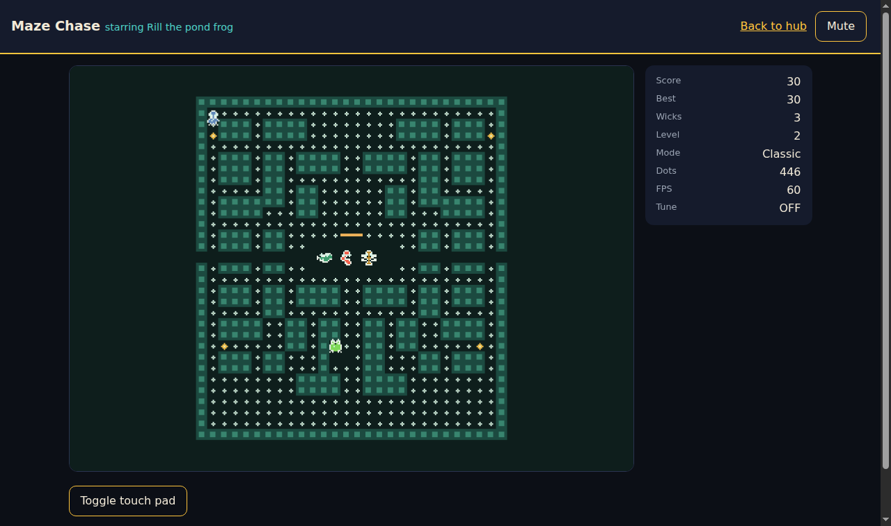

Maze Chase: browser install and launch guide
Play the same engine in a browser tab: maze-chase/index.html drives the maze-chase-web Rust crate compiled to WebAssembly, with keyboard plus touch controls, DPR-aware canvas sizing, and WebAudio sound. No gameplay logic lives in the page or the harness: the .wasm owns the session, the scores table, settings state, and every board pixel; JavaScript maps input, paints DOM, and synthesizes audio from the crate's data tables.

Launch
The page must be served over http: browsers refuse fetch() of the .wasm over file://, and the harness shows a styled error card (never a blank page) when the engine cannot load.
# Inside maze-chase/ (serves the game at /index.html):
python3 -m http.server 8000 # Windows: python -m http.server 8000
# Open http://localhost:8000/index.htmlOn GitHub Pages the game opens directly at the project URL: maze-chase/index.html is the playable page, and the site subpages carry installation, downloads, compatibility, releases, and documentation. The shipped artifact is maze-chase/web/maze-chase.wasm (about 207 KiB / 212,472 bytes, zero imports, fully self-contained), built reproducibly (see below); web/maze-chase.js is the harness (plain script, no bundler, no external resources, works offline once served).
Controls
Keyboard (remappable in Settings; arrows move DOM focus in menus, Enter/Space activates the focused button):
| Key | Play | Menus |
|---|---|---|
| Arrows / WASD | Steer Rill | Move button focus |
| P or Esc | Pause | Back |
| M | Mute toggle | Mute toggle |
| Enter / Space | - | Activate focused button |
Menu shortcuts take precedence over remapped play actions: while a menu is open, P/Esc always Back out and M always toggles mute, whatever those keys are bound to in play. Leaving Settings cancels an armed key capture.
Touch: swipe on the board to steer (24 px deadzone, dominant axis wins, so taps never turn Rill); an on-screen direction pad appears on coarse pointers (or via "Toggle touch pad"); tapping a panel's primary button activates it. There is no gamepad API on the web layer by design: keyboard plus touch is the full control scheme (see the matrix).
Screens
Title (Start, Help, Scores, Settings), Help, Scores (machine top-10 with rank/name/score/level), Settings (volumes, reduced flash, reduced motion, high contrast, theme, difficulty, mute, key remap), Pause (Resume, Restart, Quit to title), Game over (score/level/best, name entry when the run qualifies, Play again). The canvas behind the panels shows the game board: the fresh board on title, the frozen hunt on pause, the final board on game over.
Audio
Sound starts on the first click, keypress, or touch (browser autoplay policy; the harness unlocks the AudioContext on the first gesture). A visible "Sound is asleep - tap to wake" chip sits at the top of the title card until the context is running and retires after that first gesture, so a blocked context is never silent without an affordance. Every cue the engine emits is synthesized from the audio crate's own data: layered SFX recipes (voice, start/end frequency, length, delay, gain, and crumb variation) with pitch doubling per warden chain, and the five original multi-track tunes (title and fright loops plus death/clear/game-over stings) at the shared 108 BPM tempo with swung eighths. Track lanes schedule the lead, counterline, and accents independently. Music defaults to 60 percent and SFX to 80 percent; gain changes fade over 120 ms. Master/music/SFX sliders and mute persist; if WebAudio is absent the game plays silent with a note in the HUD.
Settings and scores
Both persist in localStorage (maze-chase-settings holds the exact config blob the native layers write to disk; maze-chase-scores holds the table rows). Corrupt blobs are ignored with Rust defaults kept, and private browsing simply does not persist. The name entry caps at 12 characters and falls back to "Rill" when blank.
Key remap policy differs from desktop in one documented way: the shared config rejects duplicate bindings, and every hardware key is bound by default, so the web layer moves a taken key from its previous owner (which keeps its remaining twins) instead of rejecting the bind. The move is refused only when the previous owner would be left keyless. The settings panel always shows the live Rust-side bindings.
Canvas and resize
The board renders at the terminal bitmap density (224 by 248 logical pixels, identical composition: walls, crumbs, sunseed pulse, relish bob, fright masks with flash staging, eye pairs, chomp and death clips), integer-scaled and letterboxed onto the canvas backing store, which tracks CSS size times DPR (capped at 2). Resize and orientation changes re-fit live; below the 280 px CSS minimum the board clips centered rather than reflowing. HUD text (score, best, wicks, level, mode, pickups with a completion bar, tune, fright/relish badges) is DOM, updated at 4 Hz; frame diagnostics stay hidden until enabled in Settings.
Two honest display notes, both engine-faithful, not harness bugs: a fresh board reads Pickups 448/449 with Score 10 because Rill's spawn crumb is eaten at construction (the engine banks the 10 silently, event-free); and the fresh board behind the title panel is a real engine game, so the HUD previews that state until you press Start.
Verification
cargo test -p maze-chase-web: 52 tests (board composition and determinism, canvas fit/blit math, keyboard/touch mapping, rebind steal rules, score table, cue/SFX/tune routing, session flow, hostile bridge probes, engine-clock sampling, reduced-motion floater stripping).- Node instantiation of the release
.wasm: zero imports, scoring through the real ABI, bit-identical frames across instances, audio tables resolving from crate data. - Headless-chromium E2E over CDP against the served page: boot with zero console errors, title visible with no focus scroll, canvas paints varied pixels, real button click starts play, real ArrowUp keypresses score, P pauses and Resume returns, touch swipe keeps the game alive, mobile viewport (390 by 844) shows the board near the top, and the unlock chip is fully on-screen and hit-testable at 390x844 and 320x480. A boot-gate E2E serves hand-built stale modules through a page-level
fetchoverride and proves an ABI version skew plus a missing export from each first-frame group (fright, HUD flash, reduced-motion/high-contrast settings, theme, difficulty) lands on the error card instead of Ready. Rerun any time frommaze-chase/:node web/e2e/wasm-smoke.js,node web/e2e/boot-gate-e2e.js, then (with the http server plus CDP chromium up, seeweb/e2e/README.md)node web/e2e/browser-e2e.jsandnode web/e2e/site-e2e.js. The site harness also runs unchanged against the deployed Pages preview base URL, where it crawls every subpage and rendered doc for broken links and verifies the game-first boot at 390 by 844.
Troubleshooting
- Error card "Could not load the game engine": you opened
index.htmlfrom disk. Serve the directory over http (above) and reload. - "Version mismatch": the page and the
.wasmdisagree. Rebuild the crate (below) soweb/maze-chase.wasmmatchesweb/maze-chase.js. - Silent audio: the browser blocked the context (tap the "Sound is asleep - tap to wake" chip in the title card), or volumes are at zero in Settings.
- Tiny board on a huge monitor: the canvas follows its container up to DPR 2; widen the window and it re-fits.
- Lost scores after clearing browser data: expected; the table lives in
localStorage, cleared with site data.
Reproducible builds
Stock stable Rust, no wasm-bindgen, no extra tooling: the .wasm is byte-reproducible from a clean checkout with the recorded toolchain.
From the repository root:
cd maze-chase
rustup target add wasm32-unknown-unknown
cargo build --release --locked --target wasm32-unknown-unknown -p maze-chase-web
cp target/wasm32-unknown-unknown/release/maze_chase_web.wasm web/maze-chase.wasmThe committed web/maze-chase.wasm is that exact artifact: 212,472 bytes, sha256 d6dd16bf8038ae5cbde4a81209e4835391dd4ace8a5e3eb1ef37d6b191c62ac0, built with Rust 1.99.0 (rustc commit b940084d7eb6a299eb4bfeb8e34901bc051e7ac4, embedded in the artifact); a second clean build reproduces the same bytes, while a different stable release may not. The bridge ABI version (mc_version() == 3) gates the harness: mismatched pairs fail loudly on the error card instead of misbehaving.